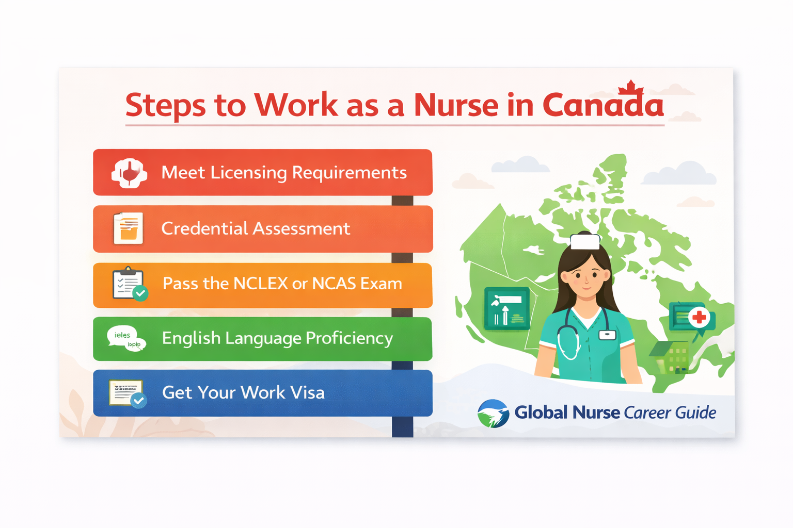

Guide for international nurses seeking employment in Canada.
Canada is known for its high-quality healthcare system and continues to recruit international nurses to address workforce shortages across several provinces. However, nurses must complete credential assessment and licensing processes before they can practice.
International nurses must first submit their credentials to the National Nursing Assessment Service (NNAS). This organization evaluates nursing education and compares it with Canadian nursing standards.
Documents required may include:
After completing NNAS assessment, nurses must apply to the regulatory body in the province where they intend to work.
Examples include:
Canada uses the NCLEX-RN exam for licensing registered nurses. International nurses must pass this exam to obtain licensure.
Some provinces require English language proficiency tests such as IELTS or CELBAN.
International nurses can immigrate through programs such as Express Entry or provincial nominee programs.
